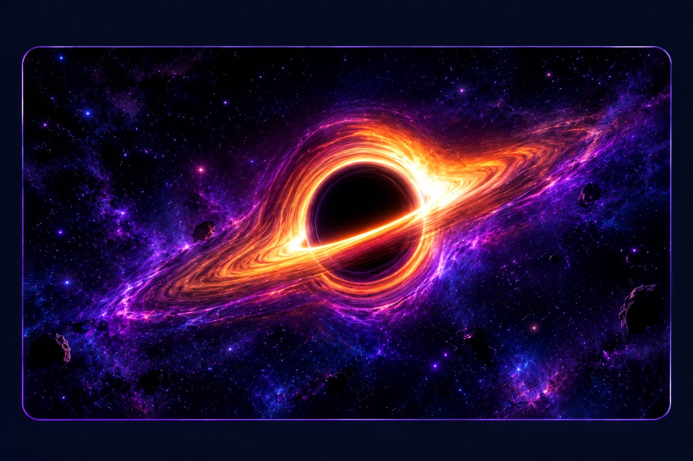
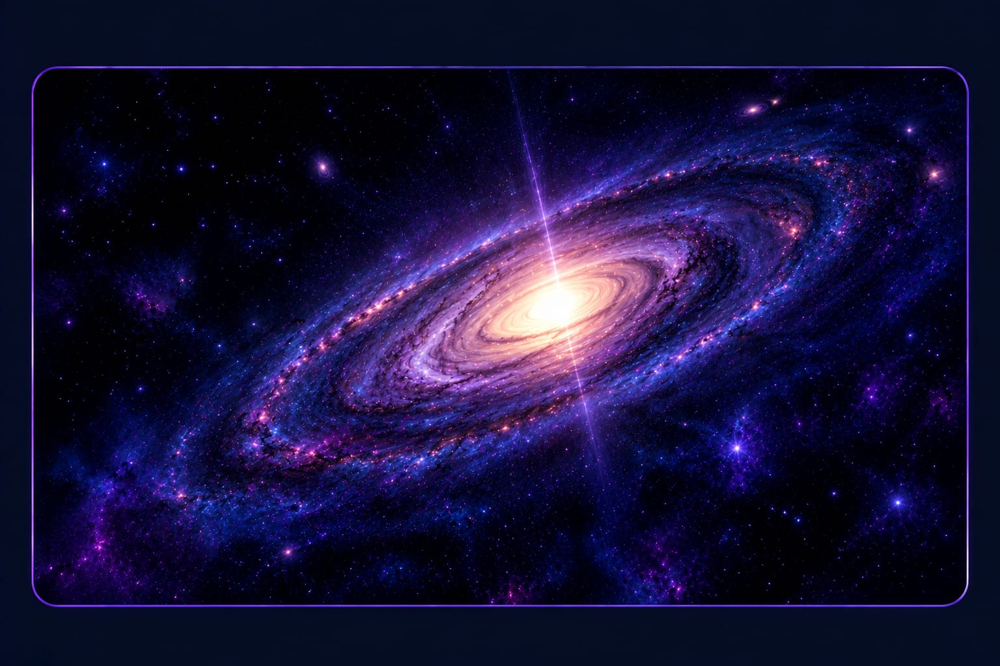
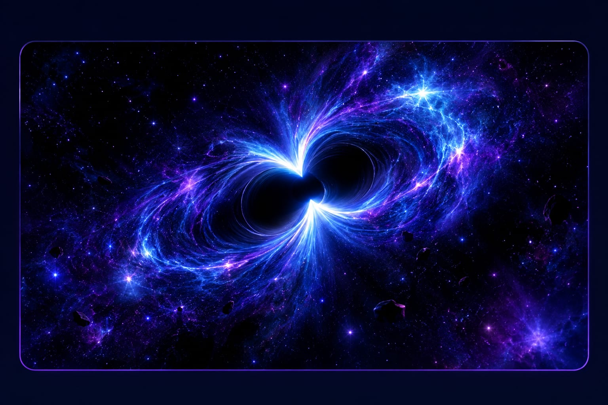

Key facts
Quick Facts About
Black Holes
EXTREME GRAVITY
Their gravity is so strong that it pulls in everything-- even light itself.
NO LIGHT ESCAPES
Black holes don't emit light.They apeear dark because light cannot escape their pull.
THEY CAN SPIN
Many black holes rotate at incredible speeds, creating powerful jets of enenrgy.
THEY GROW
Black holes can increase in mass by pulling in surrounding matter, like gas, stars and even other black holes.
THEY EDGE IS REAL
The boundry of a black hole is called the event horizon. Once crossed, there is no return
THEY HELP THE UNIVERSE
Black holes play an crucial role in the formation of galaxies and the balance of the cosmos.
------TYPES OF BLACK HOLES
THERE ARE DIFFERENT
Kinds OF BLACK HOLES

STELLAR BLACK HOLES
Formed from the collapse of massive stars. Usually
a few times the mass of our sun.They are the most
common typs of black holes in the universe.

SUPERMASSIVE BLACK HOLES
Found at the center of galaxies. Can be millions to
billions of times more massive than the sun. They
are thought to have formed in the early universe.

INTERMEDIATE BLACK HOLES
Still mysterious! They are believed between stellar
and supermassive black holes. They are thought to
form when stars
in a star cluster collide in a chain reaction.